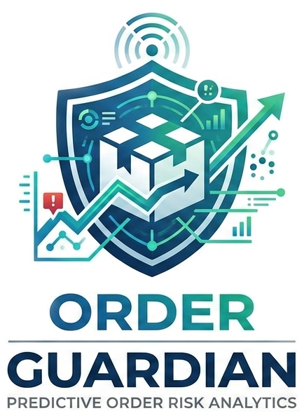
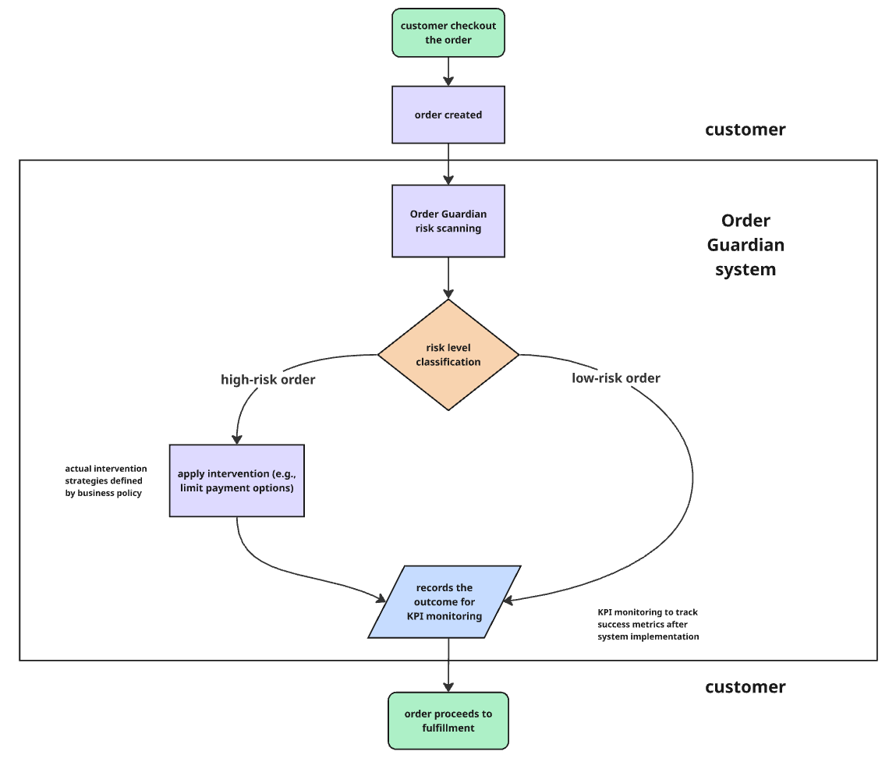

Order Guardian
Predictive Order Cancellation Risk System

Predictive Order Cancellation Risk System

E-commerce platforms process thousands of daily orders, but cancellations often happen after logistics and inventory have already been allocated.
This creates operational inefficiencies and wasted resources. Most systems handle cancellations reactively.
Built as part of a team project, this system predicts high-risk orders before fulfillment begins, enabling proactive intervention.

End-to-end system flow for order risk classification and intervention.